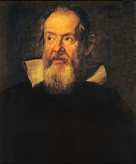
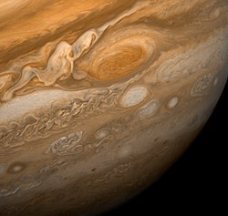
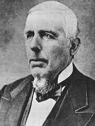

ガリレオ衛星 |
イタリアの天文学者ガリレオ・ガリレイによって発見された木星の4つの衛星 木星の衛星の中でも群を抜いて大きく、ガリレオ手製の低倍率の望遠鏡でも見ることができた イオ、エウロパ、ガニメデ、カリストの４つ |
大赤斑 |
地球３つ分くらいの大きさの台風のようなもの 地球の望遠鏡からでも観測可能であり、ジョヴァンニ・カッシーニにより発見された |
カークウッドの空隙 |
周期が木星の周期と簡単な整数比をなすところでは，小惑星の数が著しく少い 木星の強大な重力場による摂動作用により生じたものとみられる |